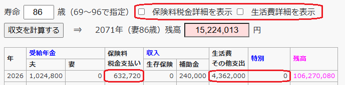

収支計画
年金税金データ
妻65歳（年金受給開始）以降に夫が亡くなる場合の年金税金データ
税金データファイルを[ファイルの選択]ボタンから指定または上の領域にドラッグ＆ドロップしてください。
税金データリストを上の領域にコピー＆ペーストまたは直接入力することもできます。
税金データリストを上の領域にコピー＆ペーストまたは直接入力することもできます。
妻65歳（年金受給開始）より前に夫が亡くなる場合の年金税金データ
税金データファイルを[ファイルの選択]ボタンから指定または上の領域にドラッグ＆ドロップしてください。
税金データ値リストを上の領域にコピー＆ペーストまたは直接入力することもできます。
税金データ値リストを上の領域にコピー＆ペーストまたは直接入力することもできます。
生活費
生活費のデータ（金額）を直接編集できる。編集したデータを[ファイル保存]することにより、次回[ファイルを選択]して読み込むことができる。
収支予定
の 円 として翌年以降を予測する。夫寿命を指定して収支予定を算出
歳（69～96で指定）⇒ 2071年（妻86歳）残高円
シミュレーション
- 本試算では、夫死亡に伴い収入と生活費が同じぐらい下がっているため、夫の寿命によって残高はあまり変わっていない。
- 夫の年金受給開始を65歳から遅らせることで右肩上がりのグラフになる。 年金受給開始を遅らせた時の同じグラフを描いて比較することで損益分岐点（何歳以上長生きすれば特になるか）が明らかになる。 仮に損益分岐点より早く亡くなった場合には将来使えるお金が減ることになるので、そのリスクを負うことにもなる。 前に超簡易的に試算した時の損益分岐点は86歳であり、その数値が大きく間違っていないとすると前述のリスクを負う価値は大きくないかもしれない。
まとめ
- 生活費はこれまでの実績に基づいて推定した値になっているが、70歳以上で増加が予想される医療費の増加分は含まれていない。 また、妻の寿命は推定できない（日本人女性の平均寿命は87歳、中国人女性の平均寿命は81歳）。 これらの不確定要素で増加する分は本試算で算出する残高から捻出することになるため、ある程度の余裕が必要である。
- 年ごとの支出額は、2つの詳細表示チェックを外して収支を計算した時の、[保険料税金支払い]＋[生活費その他支出]－[特別]で計算できる。

- 総務省家計調査における[非消費支出]が[保険料税金支払い]に相当し、同[消費支出]が[生活費その他支出]－[特別]に相当する。
- 夫婦無職世帯の平均年間支出額（総務省家計調査）
年 消費支出 非消費支出 合計 2019 2,879,364 371,784 3,251,148 2020 2,692,680 373,920 3,066,600 2021 2,693,232 367,968 3,061,200 2022 2,840,352 381,744 3,222,096 2023 3,011,508 378,456 3,389,964 - 単身無職世帯の平均年間支出額（総務省家計調査）
年 消費支出 非消費支出 合計 2019 1,676,868 144,732 1,821,600 2020 1,597,752 138,492 1,736,244 2021 1,589,712 147,252 1,736,964 2022 1,717,668 148,272 1,865,940 2023 1,745,160 146,916 1,892,076
- 夫婦無職世帯の平均年間支出額（総務省家計調査）
- 総務省家計調査が最頻値でも中央値でもなく平均値であり、常に最頻値＜中央値＜平均値の関係になることを踏まえると、 一般的な家庭（大半の家庭）とは比較にならないぐらい多い支出額で試算していることが分かる。 これで不足するようなら生活スタイルを見直す必要がある。